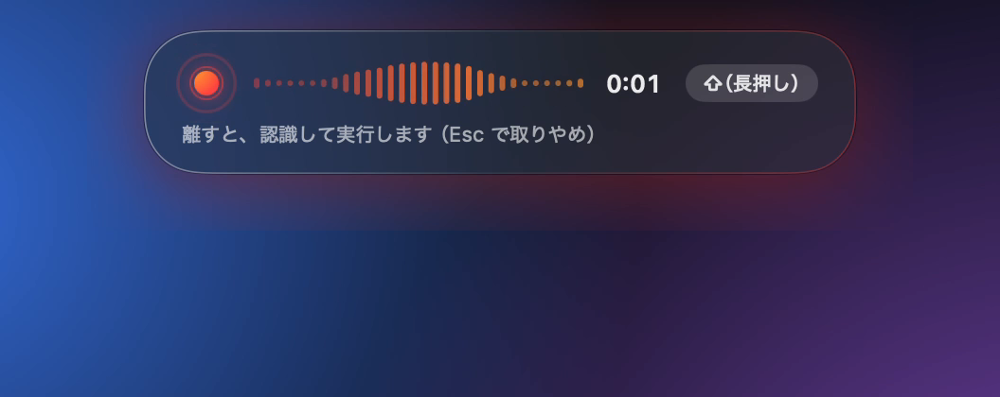
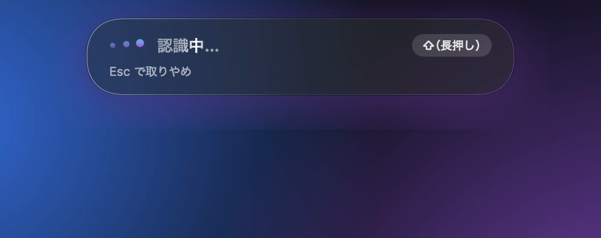
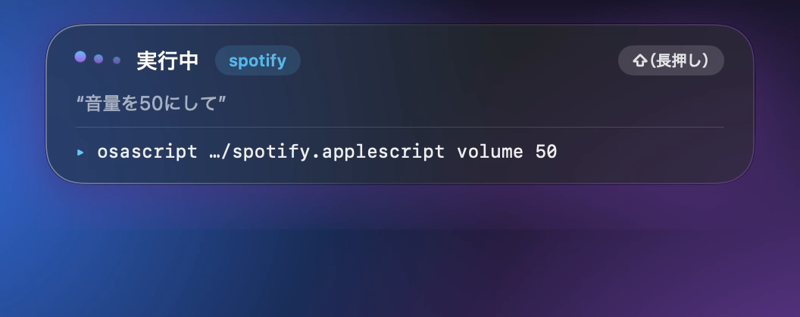
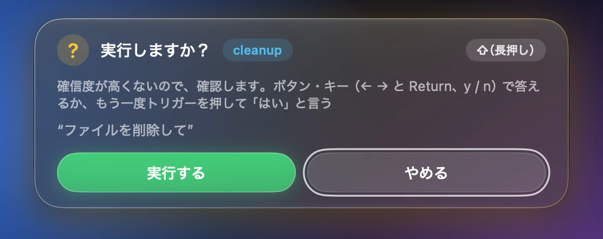
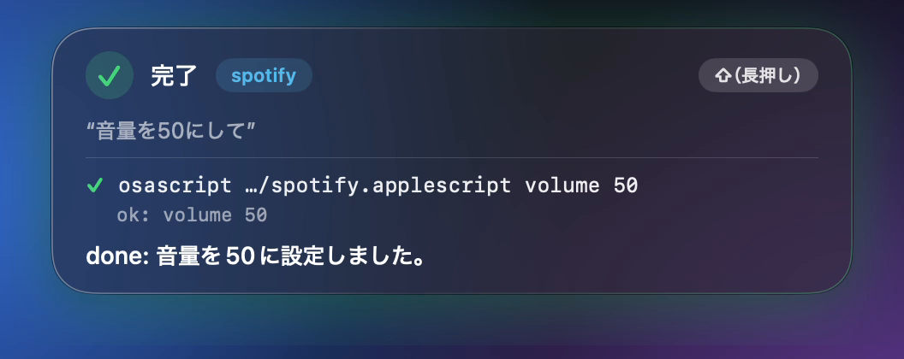
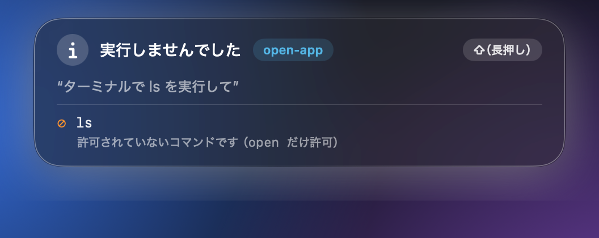

Mac の中だけで動く
音声認識、スキルの選択、初期設定の AI モデルは、すべて Mac の中で動きます。話した内容をクラウドに送りません。
試作版v0.3.13macOS 26 以降 / Apple シリコン
voice-control（コマンド名は vc）は、声や文章でお願いするだけで、Mac の操作を代わりにやってくれるツールです。音声認識も AI モデルも Mac の中だけで動くので、話した内容は外に出ません。
何を実行してよいかは、AI の判断ではなく、あらかじめ決めた許可リストで制限します。
ターミナルに貼り付けて実行します
curl -fsSL https://raw.githubusercontent.com/takemo101/voice-control/main/install.sh | bash音声認識、スキルの選択、初期設定の AI モデルは、すべて Mac の中で動きます。話した内容をクラウドに送りません。
スキルごとに「使ってよいコマンド」を決めます。リストにないコマンドは、プログラムが実行を止めます。
テキストファイル（SKILL.md）を 1 つ書くだけで、新しいスキルを追加できます。
Shift を押して話し、離すと実行されます。いま何をしているかは、画面の上のパネルでいつでも確認できます。





画面は、vc hud-preview の見本（中身は作り物）を実機で撮ったものです。
下の例を選んでみてください。本物の vc run --dry-run の出力です。--dry-run を付けると、実行はせずに、実行しようとするコマンドだけが表示されます。
話しかける内容
どのスキルを使うかは自動で選ばれます。どのスキルにも当てはまらない依頼は、基本のコマンドで動く「既定スキル」が受け持ちます。
声で頼むだけでなく、声で文字を入力することもできます。
Shift を押している間だけ話して、離すと実行します。Esc で取り消せます。実行中にもう一度話すと、前の処理を止めて、新しい依頼を実行します（確認の返事を待っているときは、返事として扱います）。
vc listen --hotkey
調べた結果や要約は、読みやすいウィンドウに表示されます。⌘C でコピーでき、Esc で閉じます。
話した言葉を、いま使っているアプリにそのまま入力します。「えーと」などのつなぎ言葉は、辞書を使って消せます（初期設定はオフ）。
vc dictate
「Claude で調べて、そのあと Spotify で次の曲」のように、続けて頼めます。依頼を順番に分けて、1 つずつ実行し、途中で失敗したらそこで止まります。
vc plan offで無効にできます「何をするか」と「使ってよいコマンド」を SKILL.md に書くだけです。同梱のスキルは、まとめて入れられます。
vc skills install --all
初期設定は Apple のモデルです。Ollama や LM Studio など、自分の Mac 上のモデルにも切り替えられます。クラウドのモデルは指定できません。
vc engine set ollama:qwen3.5:4b
リポジトリの .voice-control/skills/ にあります。
音量を50にして
お気に入りの曲をかけて再生、一時停止、次の曲、音量、お気に入りの追加と再生、今の曲の読み上げ。曲名やアーティスト名を指定した再生はできません（検索ページを開くところまでです）。
コピーした文章を要約して⌘C でコピーした文章を整えて、読みやすいウィンドウに表示します。
先月の議事録を開いて名前、場所、種類、期間でファイルを探します。候補が複数あれば選んで開きます。
Amazonでマウスを検索して指定したサイトの検索ページをブラウザで開きます。検索ワードは、そのサイトに送られます。
クロードでRustの所有権を調べてagy、claude、codex、grok、opencode、pi のどれかに調べてもらい、要点をウィンドウに表示します。指定しなければ agy です。入っていないときは、Mac 内のモデルが、Web を見ずに答えます。
『あのさ』をつなぎ言葉に追加して声で文字を入力するときに消す「つなぎ言葉」の辞書に、言葉を追加します。
Safariを開いて上のどれにも当てはまらない依頼を、
agent-desktop と基本のコマンド（open、say、ls、pwd、date）で実行します。許可の範囲は狭くしてあります。AI は間違えることがあります。そのため、何を実行してよいかは AI に任せず、プログラムが毎回チェックします。
スキルに書いた allowed-commands と先頭が一致するコマンドだけを実行します。一致しなければ実行しません。
パイプ（|）、リダイレクト（>）、&& は使えません。sudo やシェルの起動は、許可リストに書くこともできません。
削除、送信、購入など取り消しにくい依頼だと判断したときや、自信がないときは、実行の前に確認します。スキルに confirm: true と書けば、そのスキルは必ず確認します。
音声認識、スキルの選択、初期設定の AI モデルは、すべて Mac の中で動きます。例外は、自分で入れたときだけ使える 2 つのスキルです（下の「注意点」を見てください）。
話した内容、画面の文字、AI の出力に命令が書かれていても、実行の指示としては扱いません。

5 つの手順で、声で Mac を動かすところまで進めます。コマンドは、ターミナルに貼り付けて実行してください。
次の 4 つを満たしているか確認します。
アプリの画面を操作するための道具です。
ターミナルで実行
npm install -g agent-desktopvc 本体と、スキルを選ぶ小さなモデル（約 1.2 GB）をダウンロードします。
ターミナルで実行
curl -fsSL https://raw.githubusercontent.com/takemo101/voice-control/main/install.sh | bash結果：~/.local/bin/vc に置かれます。ダウンロードしたファイルは、SHA-256 を照合してから使います。~/.local/bin が PATH に入っていないときは、そう表示されます。
必要な許可や設定が、そろっているかを調べます。
ターミナルで実行
vc doctor結果：足りないものがあれば、直し方が表示されます。主に次の許可が必要です。
まず実行しない設定で試して、次に声で頼みます。
5-1 同梱のスキルを入れる
vc skills install --all5-2 実行しないで、何をするかだけ見る
vc run "音量を50にして" --dry-runTiny-Jev spotify 90.2%（0.1 秒） $ osascript ~/.voice-control/skills/spotify/spotify.applescript volume 50
結果：どのスキルが選ばれたかと、実行しようとするコマンドが表示されます。実際には何も実行されません。
5-3 声で頼む
vc listen --hotkey使い方：Shift を押している間だけ話して、離すと実行されます。初回は、マイクとアクセシビリティの許可を求められます。
手動でインストールする（ダウンロードしたファイルを自分で照合します）
V=0.3.13
curl -fsSLO https://github.com/takemo101/voice-control/releases/download/v$V/vc-$V-macos-arm64.tar.gz
curl -fsSLO https://github.com/takemo101/voice-control/releases/download/v$V/vc-$V-macos-arm64.tar.gz.sha256
shasum -a 256 -c vc-$V-macos-arm64.tar.gz.sha256
tar -xzf vc-$V-macos-arm64.tar.gz
mkdir -p ~/.local/bin && install -m 755 vc-$V-macos-arm64/vc ~/.local/bin/vc
vc model downloadソースから入れる リポジトリを clone して just install を実行します（Swift 6.2 以降が必要です。初回は、音声認識の実行環境のビルドに数分かかります）。
削除する rm ~/.local/bin/vc を実行します。モデル、設定、スキルは ~/.voice-control に残ります。
voice-control は、どんな使い方が成り立つかを確かめている試作版です。完成した製品ではありません。
スキルの選び間違いや、コマンドの組み立て間違いが起こることがあります。実行内容を先に見たいときは、--dry-run を付けてください。
macOS 26 以降の Apple シリコン Mac だけです。初期設定の AI モデルには、Apple Intelligence（オン）が必要です。使えない場合は、Mac 上の Ollama などに切り替えます（--engine）。
ask-agent は調べる内容を、選んだ AI エージェントの提供元に送ります。web-search は検索ワードを、選んだサイトに送ります。どちらも、自分で入れたときだけ使えます。vc skills install --all で入れると、注意が表示されます。
Apple の Developer ID による署名と公証はありません。上の curl でインストールすれば止められませんが、ブラウザで取得して Gatekeeper に止められたときは、xattr -dr com.apple.quarantine ~/.local/bin/vc を実行してください。
専門用語、数字、否定の言い方は、間違えやすくなります。実行する前に、聞こえた内容が画面に表示されます。
マイクを長く使った場合や、一部の実際のアプリでの動作は、まだ確認が終わっていません。確認した範囲としていない範囲は、検証記録にそのまま書いてあります。
音声認識（初期設定は Apple のオンデバイス）、スキルの選択（Tiny-Jev）、初期設定の AI モデルは、Mac の中で動きます。通信するのは、インストール、モデルの取得、スキルの取得のときと、Ollama などを使うときの Mac 自身（127.0.0.1）だけです。例外は、自分で入れた ask-agent と web-search の 2 つのスキルです。
初期設定は Shift の長押しです。たとえば vc hotkey set rshift で、右 Shift に変えられます。声で頼むキーと、声で文字を入力するキーを、別々に設定することもできます（vc hotkey set-dictate）。
作れます。~/.voice-control/skills/<名前>/SKILL.md を、次のように書きます。
--- name: open-app description: アプリを開く：「Safari を開いて」 allowed-commands: - open --- Open the app the user names with: open -a "<exact app name>". Reply: done: <one short sentence>
allowed-commands に書いたコマンドだけが実行できます。詳しくは、docs/skills.md を見てください。
Mac 上で動く Ollama や LM Studio などのモデルに切り替えられます（vc engine set ollama:qwen3.5:4b）。通信先は 127.0.0.1 に固定されていて、クラウドのモデルは指定できません。
話した内容の文字、画面の内容、入力した文字は、ファイルにもログにも残しません。表示するのは、画面の上のパネルとターミナルだけです。
vc fillers on を実行します。消す言葉は vc fillers add あのさ で追加できて、vc fillers で一覧を見られます。声で文字を入力するときだけ働きます（声で頼む内容には使いません）。
Esc を押すと、録音、認識、実行中のコマンドを取り消せます。依頼を順番に分けて実行する機能は、vc plan off で止められます。vc 自体は、rm ~/.local/bin/vc で削除できます。
いちばん安全な始め方は、--dry-run を付けて、何をするかだけを見ることです。
curl -fsSL https://raw.githubusercontent.com/takemo101/voice-control/main/install.sh | bash